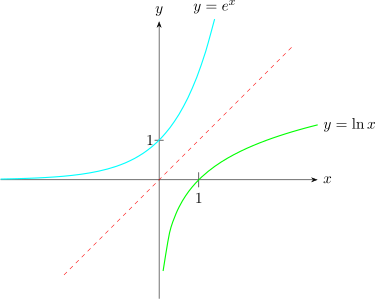

16.1 The Natural Logarithm Function
Let \(f(x)=e^x, x\in \mathbb {R}\), this function is one-to-one. Hence, the inverse exists.
To find the inverse function we have, \(y=e^x\). if we solve for \(x\), we find \(f^{-1}(x)\).
\[x=e^y\]
In the expression \(e^y\), \(e\) is called the base or index exponent. A fourth name for \(y\) is called the logarithm.
So the expression \(e^y\) can be interpreted as means as \(y=e^x\),\(x=e^y\)
- 1.
- \(\log _aa=1\iff a^1=a\)
- 2.
- \(\log _ba=c\iff a=b^c\)
- 3.
- \(\log _e1=0\iff e^0=1\)
So \(x=e^y\) we take log to a base \(e\) both sides, \(\log _ex=\log _ee^y\)
\(\implies \log _ex=y\log _ee\) \(\implies y=\log _ex\)

\(y=e^x\) and its inverse \(y=\ln x\)
Note 16.3. The graph \(y=\ln x\) is the reflection
| \(\log _{\displaystyle {b}}a=c\) | \(\iff \) | \(\displaystyle {b^{\displaystyle {c}}=a}\) | ||
| logarithm | Exponent |
Questions on this section
Stuck on something here? Ask below and it stays attached to this topic.